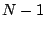
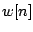
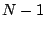
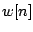
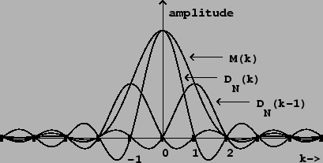
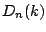
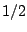
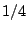
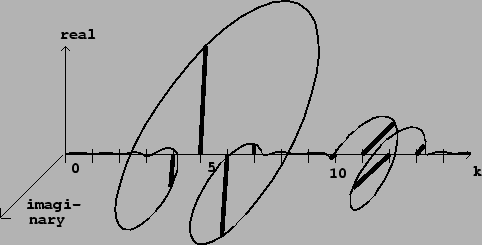

Most signals aren't periodic, and even a periodic one might have an unknown
period. So we should be prepared to do Fourier analysis on signals without
making the comforting assumption that the signal to analyze repeats at a fixed
period  . Of course, we can simply take
. Of course, we can simply take  samples of the signal and
make it periodic; this is essentially what we did in the previous
section, in which a pure sinusoid gave us the complicated Fourier transform of
Figure 9.3 (part b).
samples of the signal and
make it periodic; this is essentially what we did in the previous
section, in which a pure sinusoid gave us the complicated Fourier transform of
Figure 9.3 (part b).
However, it would be better to get a result in which the response to a pure
sinusoid were better localized around the corresponding value of  . We
can accomplish this using the enveloping technique first introduced in Figure
2.7 (Page
. We
can accomplish this using the enveloping technique first introduced in Figure
2.7 (Page  ). Applying this technique to Fourier
analysis will not only improve our analyses, but will also shed new light on
the enveloping looping sampler of Chapter 2.
). Applying this technique to Fourier
analysis will not only improve our analyses, but will also shed new light on
the enveloping looping sampler of Chapter 2.
Given a signal  , periodic or not, defined on the points from
, periodic or not, defined on the points from
 to ,
the technique is to envelope the signal before doing the Fourier analysis.
The envelope shape is known as a
window function.
Given a window function , the
windowed Fourier transform
is:
to ,
the technique is to envelope the signal before doing the Fourier analysis.
The envelope shape is known as a
window function.
Given a window function , the
windowed Fourier transform
is:
|  |
The main lobe of is four harmonics wide, twice the width of the main lobe of the Dirichlet kernel. The sidelobes, on the other hand, have much smaller magnitude. Each sidelobe of is a sum of three sidelobes of , one attenuated by  and the others, opposite in sign, attenuated by . They do not cancel out perfectly but they do cancel out fairly well.
The sidelobes reach their maximum amplitudes near their midpoints, and we
can estimate their amplitudes there, using the approximation:
This shows that applying a Hann window before taking the Fourier transform will better allow us to isolate sinusoidal components. If a signal has many sinusoidal components, the sidelobes engendered by each one will interfere with the main lobe of all the others. Reducing the amplitude of the sidelobes reduces this interference.
|  |
Figure 9.6 shows a Hann-windowed Fourier analysis of a signal with
two sinusoidal components. The two are separated by about 5 times the
fundamental frequency  , and for each we see clearly the shape of the
Hann window's Fourier transform. Four points of the Fourier analysis lie
within the main lobe of corresponding to each sinusoid. The amplitude
and phase of the individual sinusoids are reflected in those of the
(four-point-wide) peaks. The four points within a peak which happen to fall at
integer values
, and for each we see clearly the shape of the
Hann window's Fourier transform. Four points of the Fourier analysis lie
within the main lobe of corresponding to each sinusoid. The amplitude
and phase of the individual sinusoids are reflected in those of the
(four-point-wide) peaks. The four points within a peak which happen to fall at
integer values  are successively about one half cycle out of phase.
are successively about one half cycle out of phase.
To fully resolve the partials of a signal, we should choose an analysis size
 large enough so that
large enough so that  is no more than a quarter of the
frequency separation between neighboring partials. For a periodic signal, for
example, the partials are separated by the fundamental frequency. For the
analysis to fully resolve the partials, the analysis period
is no more than a quarter of the
frequency separation between neighboring partials. For a periodic signal, for
example, the partials are separated by the fundamental frequency. For the
analysis to fully resolve the partials, the analysis period  must be
at least four periods of the signal.
must be
at least four periods of the signal.
In some applications it works to allow the peaks to overlap as long as the center of each peak is isolated from all the other peaks; in this case the four-period rule may be relaxed to three or even slightly less.